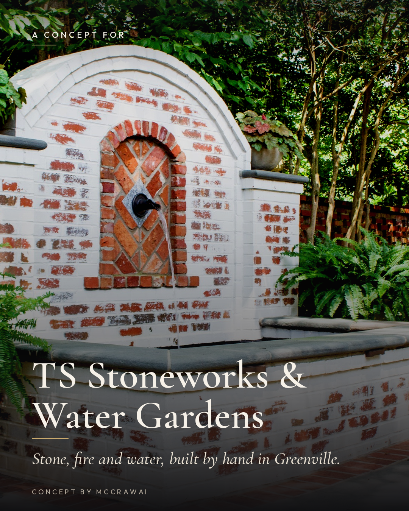

A concept for Tim
TS Stoneworks & Water Gardens
A quick idea we made for TS Stoneworks & Water Gardens, built from your own photos.

Featuring: Stone, fire and water, built by hand in Greenville.
A concept for Tim
A quick idea we made for TS Stoneworks & Water Gardens, built from your own photos.

Featuring: Stone, fire and water, built by hand in Greenville.